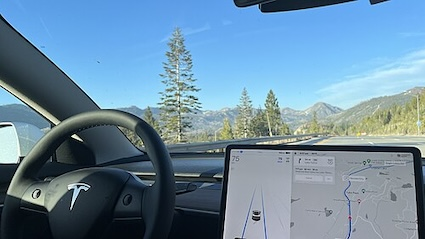

Mobility as a service
Mobility as a Service is a model that unifies multiple transportation modes into a single digital platform, providing passengers with a convenient gateway to the entire transport network.
Through an app or website, users can compare routes, plan trips, and pay for different services. By entering their destination and preferences, the system generates personalized itineraries with clear details on travel times and costs.
The interface is therefore crucial in helping users understand their options and make well-informed travel decisions.
In the future, this approach could reduce dependence on private cars by making shared and public transportation more accessible through integrated digital platforms.
Furthermore, self-driving vehicles could further expand this model by offering passengers an additional option that can be booked through the same platform, accelerating the shift from vehicle ownership to convenient, on-demand access to transportation services.

Autonomous vehicles
Autonomous vehicles use sophisticated sensors and software to perceive their surroundings, plan their movements, and control the vehicle.
Driving automation ranges from systems that assist human drivers to fully autonomous operation, with no one behind the wheel.
From a human-computer interaction perspective, trust and responsibility are essential for the adoption of autonomous vehicles.
Consumers are unlikely to use autonomous cars unless they are confident in their safety, and liability in the event of an accident remains unclear, as it may involve the occupant, the owner, the manufacturer, or the technology provider.
The integration of autonomous artificial intelligence adds further complexity, making it difficult to determine liability.
These factors underscore the need for future transportation interfaces to clearly communicate both the driving tasks delegated to computers and the responsibilities that remain with humans.
This interaction also extends to people outside the vehicle. In the absence of traditional driver cues, such as gestures or eye contact, pedestrians and other road users need clear and intuitive signals to understand the vehicle’s intentions.
Conclusion
the evolution of human–computer interaction in transportation is moving toward deeper integration with automated systems. Mobility as a Service is reshaping how people plan and manage their journeys, while autonomous vehicles are redefining the human role from active driving to supervision or passive travel as a passenger. These trends point to a future where individuals increasingly convey their travel needs through digital interfaces and entrust driving tasks to automated systems, rather than maintaining continuous control themselves.
Sources (APA Style)
- Wikiopedia Contributors. Wikipedia contributors. (n.d.). Mobility as a Service. Wikipedia. https://en.wikipedia.org/wiki/Mobility_as_a_service . Article Link
- Wikiopedia Contributors. Wikipedia contributors. (n.d.). Self-driving cars. Wikipedia. https://en.wikipedia.org/wiki/Self-driving_car . Article Link